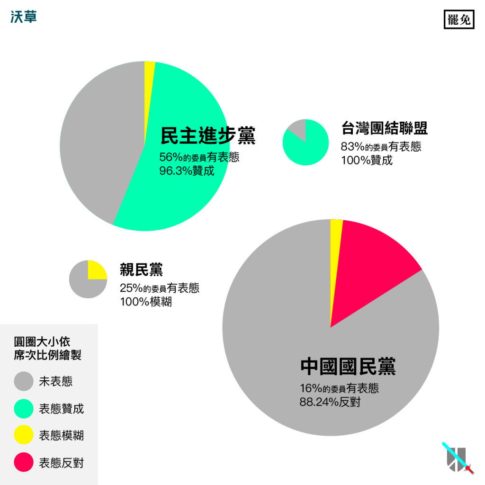
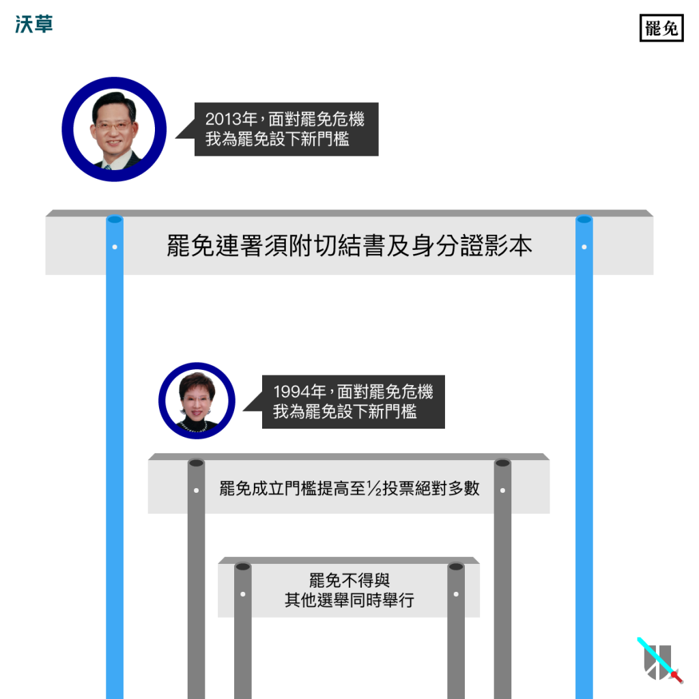
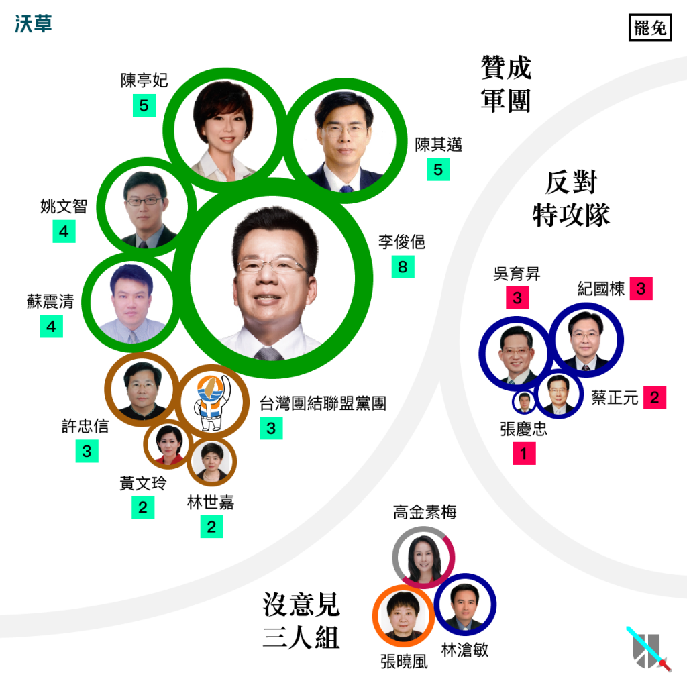

罷免門檻太高、又不准宣傳⋯⋯有哪些立委願意「違反人性」？
文：王希（沃草｜立委出任務 專案經理）
罷免權是人民收回當選官員權力的制度，美國光是2011年這一年當中，就舉行了150次罷免選舉，其中75位官員被罷免成功，9位官員自行辭職。但反觀台灣，針對立委提出的罷免，主要有三次，卻從來沒有成功過。
- 1994年，反核團體提出罷免擁核立委林志嘉、洪秀柱、詹裕仁、韓國瑜、魏鏞等5人，最後未達投票門檻而失敗。
- 2013年，憲法133實踐聯盟提出罷免吳育昇，最後未達連署門檻而失敗。
- 2015年，割闌尾計畫提出罷免蔡正元，最後未達投票門檻而失敗。
在立法院第八屆任期期間（2012年～2015年），就發生了兩次對立委的罷免行動，罷免可說是攸關立委個人去留的議題。那麼，在立法院內是怎麼討論這個議題呢？
就讓阿草用數據告訴你：多少立委願意「違反人性」（點這裡看更多）？
藍綠正反對決，親民黨游移不表態
憲法明定人民有選舉、罷免、創制、複決的權利，後兩者屬於公投議題，且公投和罷免的修法都分配到內政委員會中審查，因此近年來兩者經常被一起討論。
但比較兩者在立法院內的紀錄，卻發現罷免的表態人數和次數顯然都較少，立委很明顯比較不願意討論罷免。即使有門檻下修的提案，大部分都卡在程序委員會，甚至連討論機會都沒有。這些現象可能說明的是：
罷免門檻下修將使罷免更容易成功，直接影響立委個人權利。
另外，公投門檻下修幾乎是在野黨共識，連大多數國民黨立委都只有抱持模糊態度而未明確反對。相比之下，對於罷免門檻下修的問題，各黨意見則有很大的歧異。

Photo Credit: 沃草
民進黨及台聯當中有表態的紀錄都是高度贊成（但民進黨立委也有將近一半沒有表態），許多國民黨立委則勇於表達反對立場，親民黨立委則繼續游移在國民黨和民進黨之間，幾乎完全不表態，只有一則立場模糊的發言。
因為這些強烈反對和不表態的立委，導致雖然贊成門檻下修的表態比反對多，卻距離修法通過仍然非常遙遠。
值得關注的是，我們發現三位身為內政委員會的立委，卻都沒有對公投和罷免這兩個議題有任何表態，他們分別是：林滄敏、高金素梅、張曉風。 其中張曉風擔任立委一年就自請辭職，或許還可以理解原因，但其他兩位就很難解釋了。
人性衝突，被罷免立委的真實反應
由於立法院第八屆任期期間，民間提出許多罷免立委的行動，因此立院的表態紀錄也成為觀察立委人性衝突的最佳範本。經過分析整理，我們發現被罷免的立委有以下這幾種類型：
-
訴苦型：張慶忠立委
-
面對可能會被罷免，張慶忠立委訴苦：
「如果沒有門檻的話，我們可能每天都會被罷免，罷免除了過不過的問題之外，那種感覺、感受很不好⋯」
- 張慶忠
-
面對可能會被罷免，張慶忠立委訴苦：
-
惱怒嗆聲型：蔡正元立委
-
蔡正元立委則是惱怒，甚至在主題完全無關罷免的會議上兩度嗆聲：
「跟那些什麼爛花一起搞要罷免我，明明講好了，不管法律對不對都要遵守，最起碼媒體不准宣傳，我也沒有宣傳罷免活動啊！要宣傳我會輸他嗎？」
- 蔡正元
「我是所謂割『藍尾』名單第一名，我告訴你，我不怕。」
- 蔡正元
-
蔡正元立委則是惱怒，甚至在主題完全無關罷免的會議上兩度嗆聲：
-
另外提案修法型：吳育昇立委
-
相比之下，吳育昇立委則展現了過人的風度，完全沒有在發言時訴苦或惱怒，而是另外提出了法案，要求罷免連署要附切結書及身分證影本，變相加高罷免難度。
2013年11月29日，國民黨團利用人數優勢將這個法案逕付二讀，當時正好吳育昇立委被提出罷免，因此被民進黨立委稱作「吳育昇條款」。
事實上，過去二十年來罷免制度曾經出現重大的修法，就是1994年洪秀柱等立委面對被罷免的危機時，主動提出修法，大幅提高提案、連署門檻，也將投票門檻從三分之一提高到二分之一。
-
相比之下，吳育昇立委則展現了過人的風度，完全沒有在發言時訴苦或惱怒，而是另外提出了法案，要求罷免連署要附切結書及身分證影本，變相加高罷免難度。

Photo Credit: 沃草
結論
相較於其他議題，罷免因為涉及立委個人權利而較少得到討論的機會，就算有也很容易被認為針對特定立委而模糊焦點。
關於罷免門檻下修的議題，國民黨立委大多表達強烈反對、親民黨立委幾乎不表態，僅有民進黨及台聯立委：李俊俋（8）、陳其邁（5）、陳亭妃（5）、姚文智（4）、蘇震清（4）這幾位立委「違反人性」頻繁表達贊成。
在這樣的背景下，這屆立法院任期之間要通過相關修法，幾乎是不可能的任務。
註：括號內為表態次數

Photo Credit: 沃草
幾位之前被提出罷免的立委，都在尋求連任中。在保住自己官位的「人性衝突」下，要如何同時說服選民自己高舉「代表民意」的旗幟？不但考驗立委，更考驗選民的智慧。
另一個值得觀察的重點，如果2016選後民進黨取得新國會最大黨地位，是否會繼續維持現在偏向贊成罷免門檻下修的表態，而促成修法？
隨著現在公民意識的提升，未來針對不適任立委提出的罷免，應該會更加頻繁，討論也會更熱烈。
到底在新國會中，罷免門檻下修會完成修法，還是像過去經驗反而加高呢？這就有賴關心這個議題的選民，依照這些真實的表態紀錄做出投票選擇，才能使直接民權有更前進的機會。
文章獲沃草授權轉載，詳細表態內容請點入「沃草！立委出任務」
責任編輯：羊正鈺
核稿編輯：楊之瑜
核稿編輯：楊之瑜
SHARE：